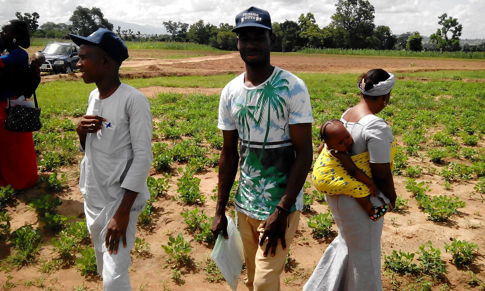

Jodozo Farm Academy
Training and empowering rural and subsistence farmers with practical, hands-on agricultural skills — on real working farms.
Where Farmers Become Agripreneurs
The Jodozo Farm Academy turns knowledge into harvests. Classes happen in the field — on our croplands, ranches, ponds and processing lines — led by agronomists, veterinarians and processors who do the work every day. Graduates leave with skills, starter plans and links to inputs and markets.
- Practical, hands-on training on live farm operations
- Workshops, field days and demonstration plots
- Post-training mentorship and outgrower linkage
Academy Courses
Crop Production
Agronomy, seed selection, plant health and harvest.
Mechanised Farming
Operating tractors, planters and harvesters safely.
Livestock & Poultry
Husbandry, feeding, health and biosecurity.
Agro-Processing
Value addition, food safety and packaging basics.
Agribusiness & Entrepreneurship
Farm budgets, records, marketing and cooperatives.
Irrigation & Water Use
Efficient irrigation scheduling and water management.
Bring the Academy to Your Community
Cooperatives, NGOs and government programmes can sponsor village training.